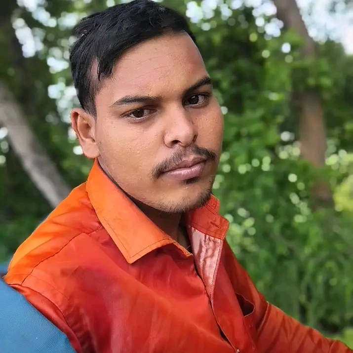

| Rajesh Mahesh | |
|---|---|
|  | |
| Born | 20 march 1996 Chhattisgarh, India |
| Nationality | Indian |
| Title | Grandmaster (GM) |
| Peak rating | 2674 (June 2024) |
| FIDE ID | 5098763 |
Rajesh Mahesh (born 20 march 1996) is an Indian chess Grandmaster. Known for his aggressive playing style and deep preparation, he is regarded as one of the top Indian chess players of his generation. Rajesh has represented India in several Chess Olympiads and international tournaments, earning multiple medals and accolades.
Rajesh was born in Chhattisgarh, India, a city known for producing top chess talent. He started playing chess at the age of 6 and quickly rose through national age-group rankings. He trained under International Master R. Balasubramanian and later received advanced coaching from Grandmaster Vishnu Prasanna.
Rajesh earned the International Master title in 2010 and became a Grandmaster in 2014. He has won numerous national and international tournaments, including:
He has represented India in three Chess Olympiads and helped the team win bronze in 2022.
Rajesh is known for his dynamic opening repertoire, particularly in the Sicilian Defense and King's Indian Defense. He often opts for sharp positions and is praised for his deep middle-game calculations.
Outside of chess, Rajesh is passionate about music and yoga. He is a married person .His wife name is Mrs. Jyoti Mahesh .They have a daughter named Shrija .He lives in Raigarh nowadays.He also coaches young talents through his online chess academy, mentoring several FIDE-rated players.